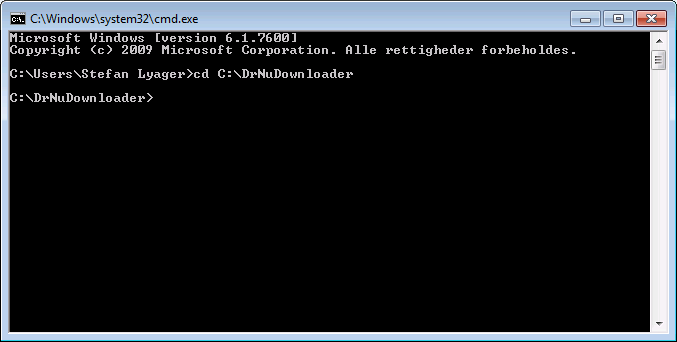
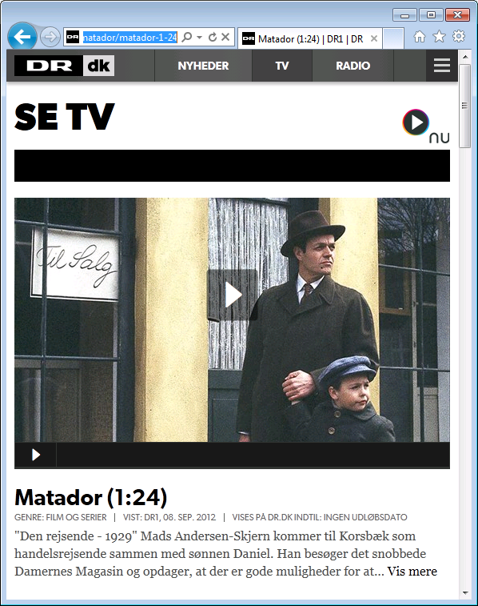

Vil du også gerne vide, hvordan man downloader TV-programmer fra DR NU?
Først skal du hente programmet DR NU Downloader.
Klik på linket for at downloade det.
Programmet er pakket (zippet) og skal pakkes ud, før det kan bruges.
Højreklik på filen og vælg "Extract All" for at pakke den ud.
Vælg en mappe, som programmet skal placeres i, fx C:\DrNuDownloader.
Tryk på Windows-tasten + R og tast "cmd" i vinduet for at åbne en kommandoprompt.
Skift til mappen, hvor du placerede programmet med følgende kommando:

Find det program på DR NU, som du gerne vil downloade, og kopier URL'en til programmet.

Gå tilbage til kommandoprompten og indtast kommandoen nedenfor.
Læg mærke til hvordan URL'en indgår i kommandoen.
Læn dig tilbage og vent, mens programmet downloades: